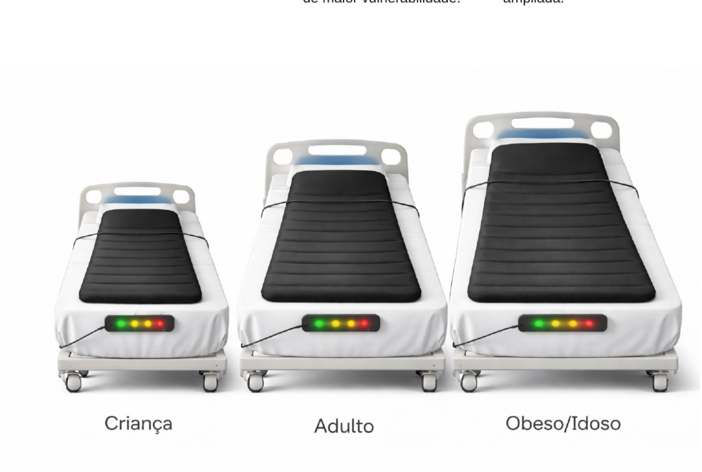

Colchão inteligente
O colchão inteligente é um dos eixos centrais da proposta, voltado à prevenção de lesão por pressão com adaptação a diferentes perfis de pacientes.
- Versão para criança.
- Versão para adulto.
- Versão reforçada para idoso e pessoa obesa.